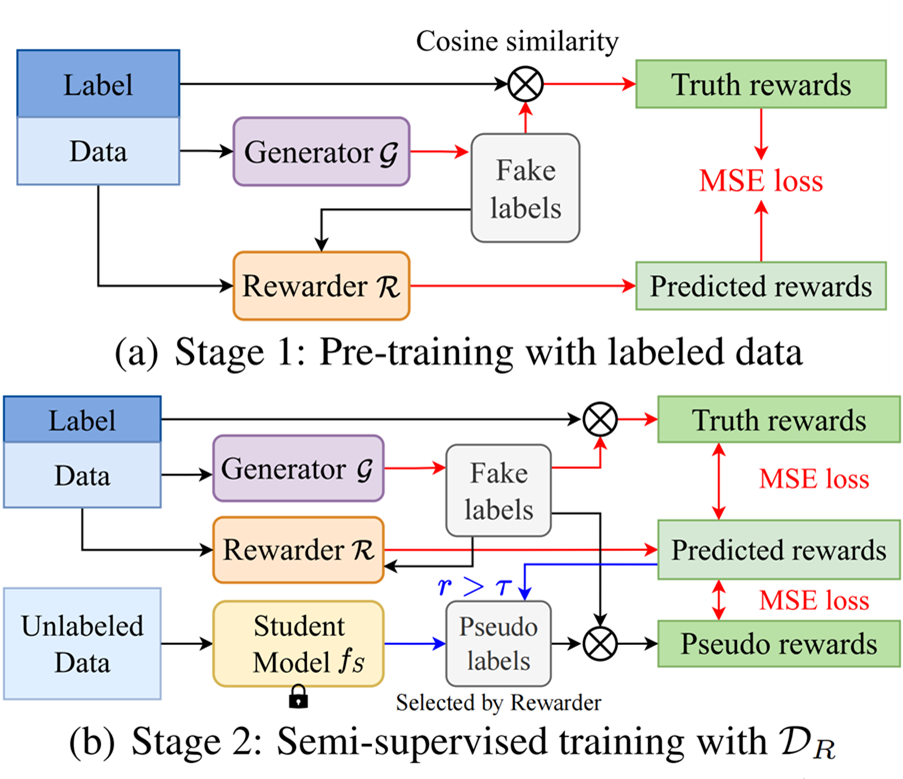
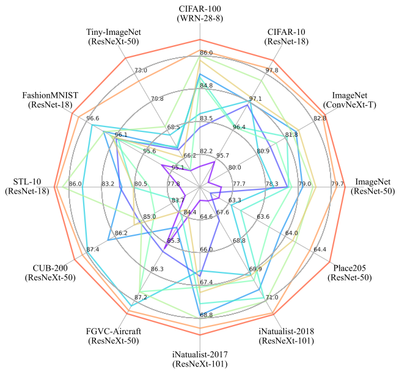

Research
I'm interested in computer vision, deep learning, MLLMs, and semi-supervised learning. Most of my research is towards unified large model. Representative papers are highlighted .
Your browser does not support the video tag.

SemiReward: A General Reward Model for Semi-supervised Learning
Siyuan Li* ,
Weiyang Jin* ,
Zedong Wang ,
Fang Wu ,
Zicheng Liu ,
Cheng Tan ,
Stan Z. Li
ICLR , 2024
project page
/
zhihu
/
arXiv
A simple and effective pseudo-label evaluation algorithm is designed and combined with the Reward Model, which can be friendly used in data-centric scenarios.
Your browser does not support the video tag.

OpenMixup: A Comprehensive Mixup Benchmark for Visual Classification
Siyuan Li* ,
Zedong Wang* ,
Zicheng Liu* ,
Di Wu ,
Cheng Tan ,
Weiyang Jin ,
Stan Z. Li
Arxiv , 2022
project page
/
arXiv
A great benchmark for mix-up task bolster the reproducibility of previously gained insights and facilitate a better understanding of mixup properties.
Selected Awards and Honors
2022-2023: Merit Student of Beijing Jiaotong University
2022: National Scholarship (Highest Honor for undergraduates in China, 8000RMB¥)
2022: First Prize for Mathematical Contest in Modeling (MCM) Top 6%
2021: First Prize for Mathematics Competition of Chinese College Student Top 0.26%
Services
Conference Reviewer: ECCV2024
Journal Reviewer: Expert Systems with Applications
{kind=link}